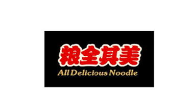
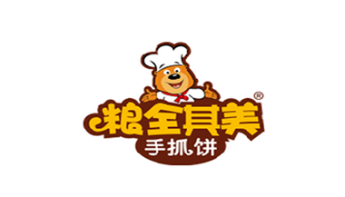
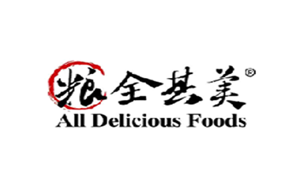
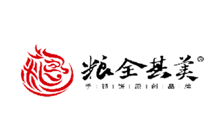
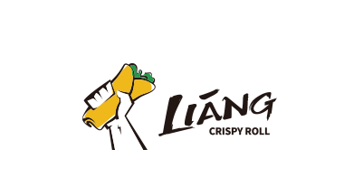
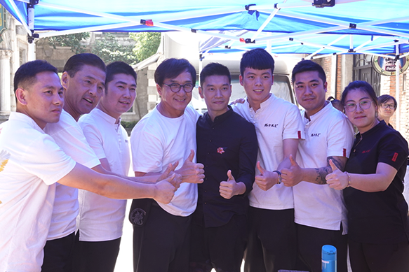
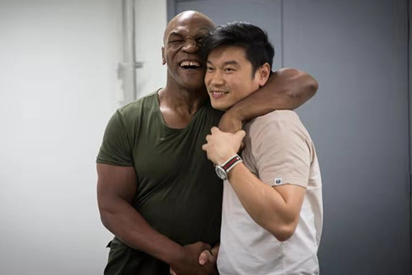

ABOUT
세계 100+ 체인점의 성공적인 경험과 풍부한 관리 경험을 가진 리앙 크리스피롤입니다
Liang
History
리앙크리스피롤은 창업자인 차이라이가 2004년,
대만의 실린 야시장에서 대만 간식쇼좌빙을 맛본 후
“대만 쇼좌빙”으로 시작하였습니다.
프랜차이즈를 시작한지 2년만인
2005년 9월부터 중국 전역의 점포 수
1,000점을 돌파하였으며 그 후 10,000점 이상의
점포로 확장하였습니다.
기업 소개 Liang History
LIANG CRISPY ROLL은 대만에서 처음 시작하여 브랜드 이미지를 높이기 위해 2011년 본사는 체인점 경영 모델을 규범화하였습니다.
전 세계 량쇼좌(쇼좌빙은 거리음식으로 다가와 본사에서 브랜드 가치를 높이고자 ‘량쇼좌’를 사용) 업계의 1인자이며 중국, 미국, 영국 등 전 세계
10,000개 이상의 체인점을 갖고 있습니다.
- 2004 
- 2005
- 2010 
- 2015 
- 2016 
- 2019 
스타 홍보모델 Liang Celebrity
주걸륜, 국제적인 슈퍼스타로 약 10년 동안
리앙크리스피롤의 애호가로써 지지해 왔으며
2019년부터 공식적으로 브랜드 홍보모델이 되었습니다.
국제적인 스타 성룡과 Mike Tyson(마이크 타이슨) 또한
브랜드 컨셉과 제품을 인정하며 지속적으로 관심과
애정을 쏟고 있습니다.
- 
- 